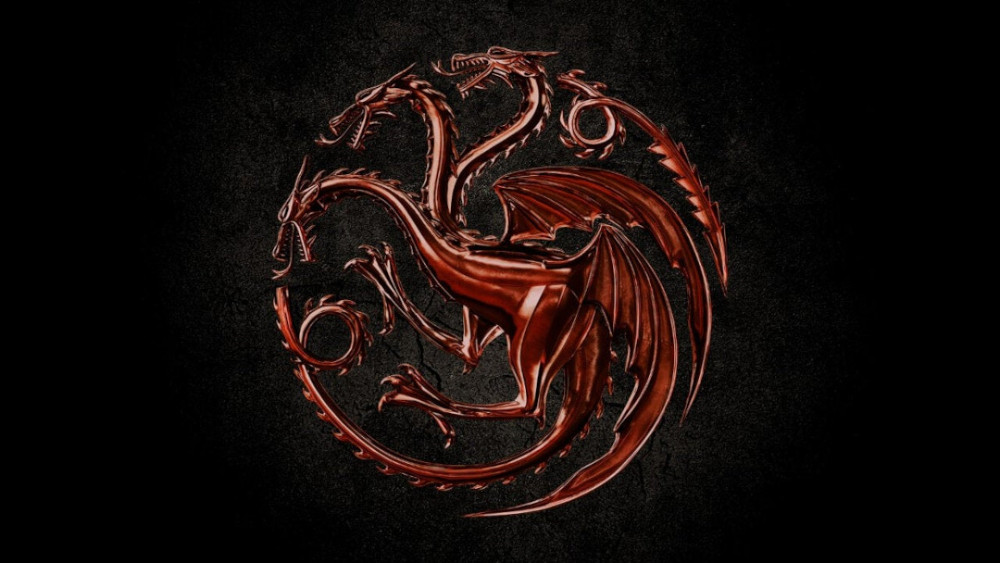

SOBRE O FOGO
House of the Dragon (no Brasil: A Casa do Dragão) é uma série de televisão de drama e fantasia medieval norte-americana criada por Ryan J. Condal e Martin R.R para o canal HBO. O desenvolvimento da série foi realizado por Condal e pelo diretor Miguel Sapochnik,[2] com base em eventos narrados na segunda metade do romance Fire & Blood (2018), escrito por Martin. A série é uma prequela de Game of Thrones (2011–2019) e tem como enredo a disputa dos meios-irmãos Rhaenyra Targaryen e Aegon II pela posse do Trono de Ferro dos Sete Reinos de Westeros.[3] House of the Dragon estreou em 21 de agosto de 2022[4][5] e logo se tornou a maior estreia de uma série na história do canal HBO em solo americano, atraindo quase 10 milhões de telespectadores em todas as suas plataformas.[6] Além disso, a série também recebeu inúmeras críticas positivas de especialistas do entretenimento, sendo considerada por alguns melhor ou similar a série título da franquia
Gelo e fogo
A série recebeu um sinal verde para ser produzida em outubro de 2019, com o elenco começando a ser divulgado em julho de 2020 e fotografia principal começando em abril de 2021 no Reino Unido. A primeira temporada da série foi filmada em diversos lugares da Europa, entre eles estão: a Cornualha, Peak District e Hertfordshire na Inglaterra; Monsanto em Portugal; e cidades espanholas como Cáceres, Trujillo, Granada e Lloret de Mar.[8] Devido ao grande sucesso imediato, em menos de uma semana depois da exibição do primeiro episódio, a série foi oficialmente renovada para a segunda temporada por um comunicado enviado pela assessoria da HBO.[9]